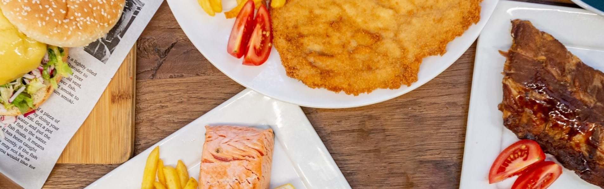
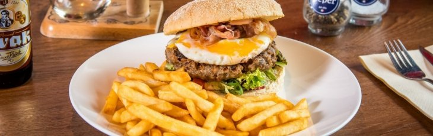
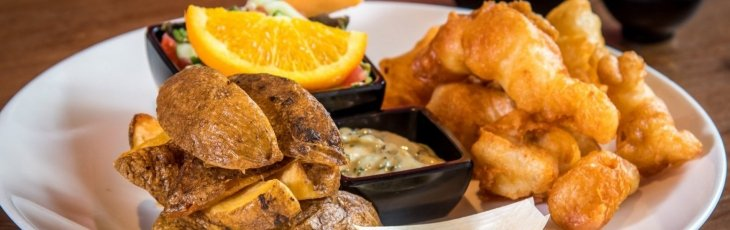
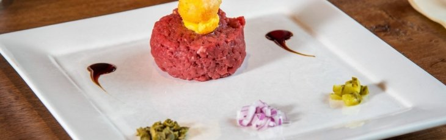
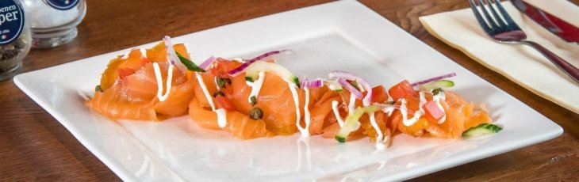

Afhalen
Bestel online en haal uw bestelling op bij ons restaurant in Hoog Catharijne.
Bestel om af te halenLekker eten in een gezellige sfeer, tussen Utrecht Centraal en de Mariaplaats. Voor een onderbreking of afsluiting van uw werk- of winkeldag, of vóór de voorstelling.

U vindt ons in Hoog Catharijne, bij de entree Moreelsepark: een gezellige, warme ambiance voor een drankje, lunch of diner. Op de kaart een ruime keus, van een burger of saté tot een driegangen keuzemenu.
Voor alle gerechten geldt: zoveel mogelijk huisgemaakt, met dagverse ingrediënten. En naast de reguliere kaart hebben we altijd een aantal gerechten “buiten de kaart”.
Naar de kaartVanaf ons restaurant
U kunt bij ons bestellen om af te halen in het restaurant, of laten bezorgen. Afhalen kan maandag t/m zaterdag van 12.00 tot 21.00 uur, zondag van 12.30 tot 20.00 uur.
Bestel online en haal uw bestelling op bij ons restaurant in Hoog Catharijne.
Bestel om af te halenBezorgen kan op dit moment uitsluitend via Uber Eats.
Bestel via Uber EatsAfhalen of bezorgen buiten deze tijden? Neem contact met ons op via info@hagenouw.net.
Hoog Catharijne en het stationsgebied zijn de laatste jaren enorm veranderd. Daarom een duidelijke routebeschrijving.
Kunt u het niet zo snel vinden? Bel dan 030 - 236 95 11.
Parkeren: parkeergarage Croeselaan (onder het Jaarbeursplein, direct bij het Beatrix Theater), Croeselaan 14P, 3521 CA Utrecht. Tarief € 4,76 per uur (u betaalt per minuut), avondkaart (19.00 – 01.00 uur) € 16,64, max. per dag € 47,53. Route naar parkeergarage Croeselaan
De dichtstbijzijnde garage is P1 Moreelsepark, Spoorstraat 22, 3511 EN Utrecht, direct onder ons restaurant. Tarief 2024: € 0,90 per 12 minuten (ca. € 4,50 per uur). Alle garages zijn 24 uur per dag geopend.
Er zijn in totaal 6 parkeergarages onder Hoog Catharijne. Vanaf de meest gebruikelijke aanrijdroute is de volgorde P5, P4, P3, P2 en dan pas P1.
Reserveer uw parkeerplaats tegen voordeeltarief · Route naar P1 Hoog Catharijne
Komt u lopend of met de fiets, dan is de entree Moreelsepark het dichtstbij. Deze entree is aan de kant van de Mariaplaats. Via de roltrap komt u direct op het Godebaldkwartier, op een pleintje: hier zit onze zaak, direct naast Albert Heijn.
Tips voor een dagje Utrecht, met een lunch of diner bij ons erbij.

Maak je muzikale dag compleet met een lunch of uitgebreid diner.

Maak je dagje cultuur snuiven compleet, op loopafstand van het theater.

Shoppen, cultuur snuiven of kanoën, en dan lunchen of dineren bij Hagenouw.

Van musea tot de Domtoren: Utrecht heeft voor iedereen iets te bieden.
| Maandag | 12.00 – 20.30 |
| Dinsdag | 10.00 – 21.30 |
| Woensdag | 10.00 – 21.30 |
| Donderdag | 10.00 – 21.30 |
| Vrijdag | 10.00 – 21.30 |
| Zaterdag | 10.00 – 21.30 |
| Zondag | 12.00 – 20.30 |
Voor een drankje, lunch en diner.
Werken bij Hagenouw: vacatures
Hagenouw Eten & Drinken BV · KvK 30049935 · BTW NL0026.30.370.B.02
Wij hanteren de Uniforme Voorwaarden Horeca van KHN.